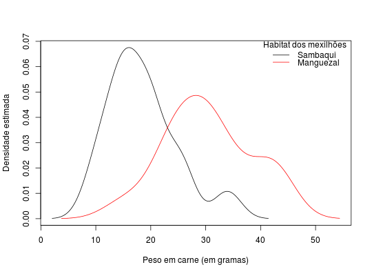

Resultados do peso de carne, em gramas, de mexilhões provenientes de área de sambaqui e manguezal.
Um data.frame com 30 observações e 2 variáveis, em que
localpesoAndrade, D. F., Ogliari, P. J. (2010). Estatística para as ciências agrárias e biológicas com noções de experimentação (2nd ed.). Florianópolis, SC. Editora da UFSC. (Tabela 2.42, pág. 146)
data(AndradeTb2.42) str(AndradeTb2.42)#> 'data.frame': 30 obs. of 2 variables: #> $ local: Factor w/ 2 levels "Manguezal","Sambaqui": 2 2 2 2 2 2 2 2 2 2 ... #> $ peso : num 30.6 28.9 32.2 24.2 25.6 ...# Box-plots boxplot(peso ~ local, data = AndradeTb2.42, xlab = "Local", ylab = "Peso de Carne (em gramas)")# Gráficos de densidades dens <- with(AndradeTb2.42, tapply(peso, local, density)) plot(x = 0, y = 0, type = "n", xlim = range(sapply(dens, function(d) range(d$x))), ylim = range(sapply(dens, function(d) range(d$y))), xlab = "Peso em carne (em gramas)", ylab = "Densidade estimada")lapply(1:length(dens), function(i) lines(dens[[i]], col = i))#> [[1]] #> NULL #> #> [[2]] #> NULL #>legend("topright", title = "Habitat dos mexilhões", legend = unique(AndradeTb2.42$local), lwd = 1, col = 1:2, bty = "n")